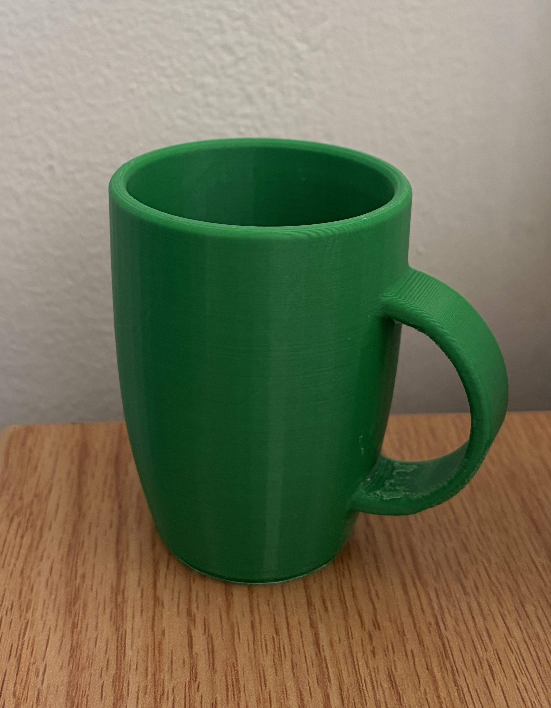

Duke Pratt engineering student interested in electrical and computer engineering, tech, and economics.
Standard game controllers don't work for a child with limited mobility, so our 5-person team is designing a fishing game he can play with just 2 switches. We're following the engineering design process, starting by interviewing him and his care team. So far we've defined the requirements and picked a design direction.
My first hands-on builds at Duke. I soldered a circuit that switches LED lights behind a custom sign, and 3D-printed a mug with the Duke logo on the bottom. They taught me the basics of turning a design into a real, working object.
